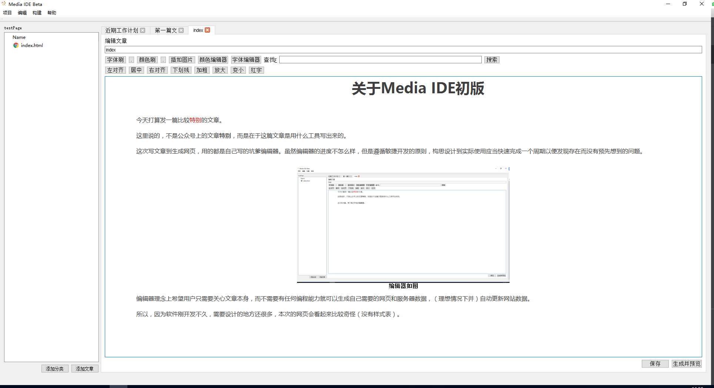

关于Media IDE初版
今天打算发一篇比较特别的文章。
这里说的，不是公众号上的文章特别，而是在于这篇文章是用什么工具写出来的。
这次写文章到生成网页，用的都是自己写的坑爹编辑器。虽然编辑器的进度不怎么样，但是遵循敏捷开发的原则，构思设计到实际使用应当快速完成一个周期以便发现存在而没有预先想到的问题。

编辑器如图
编辑器理念上希望用户只需要关心文章本身，而不需要有任何编程能力就可以生成自己需要的网页和服务器数据，（理想情况下并）自动更新网站数据。
所以，因为软件刚开发不久，需要设计的地方还很多，本次的网页会看起来比较奇怪（没有样式表）。